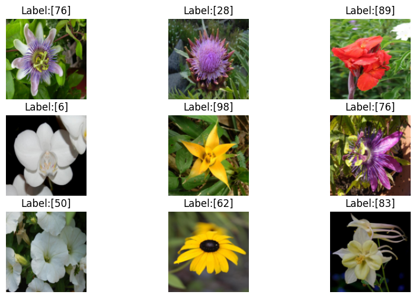
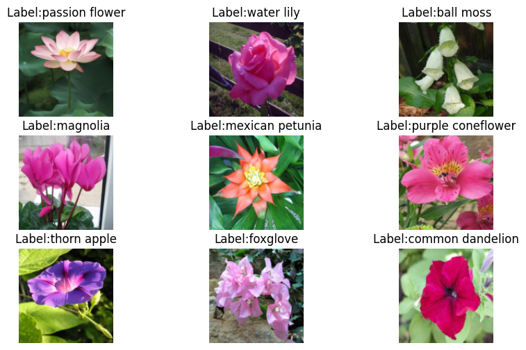
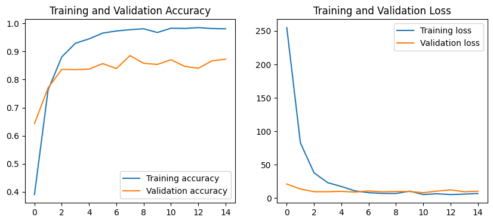
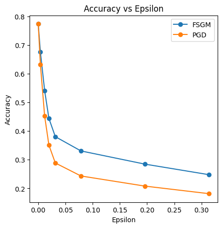
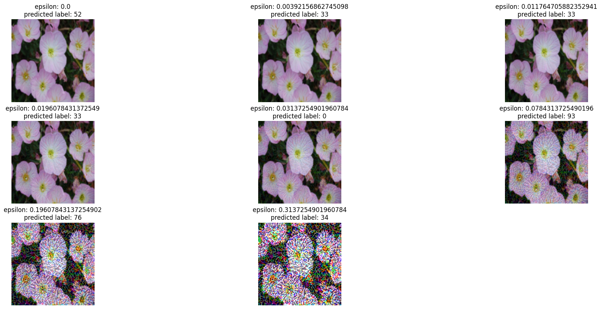

# Mount google drive
from google.colab import drive
drive.mount('/content/drive')Mounted at /content/drive# Mount google drive
from google.colab import drive
drive.mount('/content/drive')Mounted at /content/drive# Import libraries
import torch
import torch.nn as nn
from torch.utils.data import Dataset, DataLoader, Subset, random_split
import torchvision
from torchvision import transforms
import torch.optim as optim
from torchvision.datasets import Flowers102
from torchvision.models import vgg16
import numpy as np
import matplotlib.pyplot as plt# Install the Cleverhans library (provides adversarial attacks)
!pip install -qq git+http://github.com/tensorflow/cleverhans.git#egg=cleverhansPreparing metadata (setup.py) ... done ━━━━━━━━━━━━━━━━━━━━━━━━━━━━━━━━━━━━━━━━ 154.7/154.7 kB 14.5 MB/s eta 0:00:00 Building wheel for cleverhans (setup.py) ... done
# Import FGMS and PGD attacks
import cleverhans
from cleverhans.torch.attacks.fast_gradient_method import fast_gradient_method
from cleverhans.torch.attacks.projected_gradient_descent import projected_gradient_descent# Define the transform to preprocess the data
transform = transforms.Compose([
transforms.Resize((128, 128)), # Resize the images to 128 x 128 pixels
transforms.ToTensor(), # Convert the images to a PyTorch tensor
])
# Download the train, test, and validation datasets
# We switched the train and test splits, since the test split was much larger than the train split
train_dataset = Flowers102(root='sample_data/flowers', split="test", transform=transform, download=True)
test_dataset = Flowers102(root='sample_data/flowers', split="train", transform=transform, download=True)
validation_dataset = Flowers102(root='sample_data/flowers', split="val", transform=transform, download=True)100%|██████████| 345M/345M [00:20<00:00, 17.0MB/s]
100%|██████████| 502/502 [00:00<00:00, 1.43MB/s]
100%|██████████| 15.0k/15.0k [00:00<00:00, 41.0MB/s]# Check the datasets
print(train_dataset)
print(test_dataset)
print(validation_dataset)Dataset Flowers102
Number of datapoints: 6149
Root location: sample_data/flowers
split=test
StandardTransform
Transform: Compose(
Resize(size=(128, 128), interpolation=bilinear, max_size=None, antialias=True)
ToTensor()
)
Dataset Flowers102
Number of datapoints: 1020
Root location: sample_data/flowers
split=train
StandardTransform
Transform: Compose(
Resize(size=(128, 128), interpolation=bilinear, max_size=None, antialias=True)
ToTensor()
)
Dataset Flowers102
Number of datapoints: 1020
Root location: sample_data/flowers
split=val
StandardTransform
Transform: Compose(
Resize(size=(128, 128), interpolation=bilinear, max_size=None, antialias=True)
ToTensor()
)# Create dataloaders to iterate over the datasets
train_dataloader = DataLoader(train_dataset, shuffle=True, batch_size=64)
test_dataloader = DataLoader(test_dataset, shuffle=False, batch_size=64)
validation_dataloader = DataLoader(validation_dataset, shuffle=False, batch_size=64)# Asscociate the labels and names of flowers
flower_names = {"21": "fire lily", "3": "canterbury bells", "45": "bolero deep blue", "1": "pink primrose", "34": "mexican aster", "27": "prince of wales feathers", "7": "moon orchid", "16": "globe-flower", "25": "grape hyacinth", "26": "corn poppy", "79": "toad lily", "39": "siam tulip", "24": "red ginger", "67": "spring crocus", "35": "alpine sea holly", "32": "garden phlox", "10": "globe thistle", "6": "tiger lily", "93": "ball moss", "33": "love in the mist", "9": "monkshood", "102": "blackberry lily", "14": "spear thistle", "19": "balloon flower", "100": "blanket flower", "13": "king protea", "49": "oxeye daisy", "15": "yellow iris", "61": "cautleya spicata", "31": "carnation", "64": "silverbush", "68": "bearded iris", "63": "black-eyed susan", "69": "windflower", "62": "japanese anemone", "20": "giant white arum lily", "38": "great masterwort", "4": "sweet pea", "86": "tree mallow", "101": "trumpet creeper", "42": "daffodil", "22": "pincushion flower", "2": "hard-leaved pocket orchid", "54": "sunflower", "66": "osteospermum", "70": "tree poppy", "85": "desert-rose", "99": "bromelia", "87": "magnolia", "5": "english marigold", "92": "bee balm", "28": "stemless gentian", "97": "mallow", "57": "gaura", "40": "lenten rose", "47": "marigold", "59": "orange dahlia", "48": "buttercup", "55": "pelargonium", "36": "ruby-lipped cattleya", "91": "hippeastrum", "29": "artichoke", "71": "gazania", "90": "canna lily", "18": "peruvian lily", "98": "mexican petunia", "8": "bird of paradise", "30": "sweet william", "17": "purple coneflower", "52": "wild pansy", "84": "columbine", "12": "colt's foot", "11": "snapdragon", "96": "camellia", "23": "fritillary", "50": "common dandelion", "44": "poinsettia", "53": "primula", "72": "azalea", "65": "californian poppy", "80": "anthurium", "76": "morning glory", "37": "cape flower", "56": "bishop of llandaff", "60": "pink-yellow dahlia", "82": "clematis", "58": "geranium", "75": "thorn apple", "41": "barbeton daisy", "95": "bougainvillea", "43": "sword lily", "83": "hibiscus", "78": "lotus lotus", "88": "cyclamen", "94": "foxglove", "81": "frangipani", "74": "rose", "89": "watercress", "73": "water lily", "46": "wallflower", "77": "passion flower", "51": "petunia"}# Plot several images and labels
plt.figure(figsize=(10, 6))
data = iter(train_dataloader)
for n in range(9):
ax = plt.subplot(3, 3, n+1)
image, labels = next(data)
img = image[0].permute(1, 2, 0).squeeze()
plt.imshow(img.numpy())
plt.title('Label:' + str([int(labels[0])]))
plt.axis('off')
# Plot several images and labels
plt.figure(figsize=(10, 6))
data = iter(train_dataloader)
for n in range(9):
ax = plt.subplot(3, 3, n+1)
image, labels = next(data)
img = image[0].permute(1, 2, 0).squeeze()
plt.imshow(img.numpy())
plt.title('Label:' + str(flower_names.get(str(int(labels[0])), "Unknown")))
plt.axis('off')
# Import pretrained VGG16
VGG16 = vgg16(pretrained=True)/usr/local/lib/python3.12/dist-packages/torchvision/models/_utils.py:208: UserWarning: The parameter 'pretrained' is deprecated since 0.13 and may be removed in the future, please use 'weights' instead.
warnings.warn(
/usr/local/lib/python3.12/dist-packages/torchvision/models/_utils.py:223: UserWarning: Arguments other than a weight enum or `None` for 'weights' are deprecated since 0.13 and may be removed in the future. The current behavior is equivalent to passing `weights=VGG16_Weights.IMAGENET1K_V1`. You can also use `weights=VGG16_Weights.DEFAULT` to get the most up-to-date weights.
warnings.warn(msg)Downloading: "https://download.pytorch.org/models/vgg16-397923af.pth" to /root/.cache/torch/hub/checkpoints/vgg16-397923af.pth100%|██████████| 528M/528M [00:02<00:00, 216MB/s]# Change the output in the last layer to 102 classes
VGG16.classifier._modules['6'] = nn.Linear(4096, 102)# Move teh model to the GPU
device = torch.device('cuda' if torch.cuda.is_available() else 'cpu')
devicedevice(type='cuda')VGG16.to(device)VGG(
(features): Sequential(
(0): Conv2d(3, 64, kernel_size=(3, 3), stride=(1, 1), padding=(1, 1))
(1): ReLU(inplace=True)
(2): Conv2d(64, 64, kernel_size=(3, 3), stride=(1, 1), padding=(1, 1))
(3): ReLU(inplace=True)
(4): MaxPool2d(kernel_size=2, stride=2, padding=0, dilation=1, ceil_mode=False)
(5): Conv2d(64, 128, kernel_size=(3, 3), stride=(1, 1), padding=(1, 1))
(6): ReLU(inplace=True)
(7): Conv2d(128, 128, kernel_size=(3, 3), stride=(1, 1), padding=(1, 1))
(8): ReLU(inplace=True)
(9): MaxPool2d(kernel_size=2, stride=2, padding=0, dilation=1, ceil_mode=False)
(10): Conv2d(128, 256, kernel_size=(3, 3), stride=(1, 1), padding=(1, 1))
(11): ReLU(inplace=True)
(12): Conv2d(256, 256, kernel_size=(3, 3), stride=(1, 1), padding=(1, 1))
(13): ReLU(inplace=True)
(14): Conv2d(256, 256, kernel_size=(3, 3), stride=(1, 1), padding=(1, 1))
(15): ReLU(inplace=True)
(16): MaxPool2d(kernel_size=2, stride=2, padding=0, dilation=1, ceil_mode=False)
(17): Conv2d(256, 512, kernel_size=(3, 3), stride=(1, 1), padding=(1, 1))
(18): ReLU(inplace=True)
(19): Conv2d(512, 512, kernel_size=(3, 3), stride=(1, 1), padding=(1, 1))
(20): ReLU(inplace=True)
(21): Conv2d(512, 512, kernel_size=(3, 3), stride=(1, 1), padding=(1, 1))
(22): ReLU(inplace=True)
(23): MaxPool2d(kernel_size=2, stride=2, padding=0, dilation=1, ceil_mode=False)
(24): Conv2d(512, 512, kernel_size=(3, 3), stride=(1, 1), padding=(1, 1))
(25): ReLU(inplace=True)
(26): Conv2d(512, 512, kernel_size=(3, 3), stride=(1, 1), padding=(1, 1))
(27): ReLU(inplace=True)
(28): Conv2d(512, 512, kernel_size=(3, 3), stride=(1, 1), padding=(1, 1))
(29): ReLU(inplace=True)
(30): MaxPool2d(kernel_size=2, stride=2, padding=0, dilation=1, ceil_mode=False)
)
(avgpool): AdaptiveAvgPool2d(output_size=(7, 7))
(classifier): Sequential(
(0): Linear(in_features=25088, out_features=4096, bias=True)
(1): ReLU(inplace=True)
(2): Dropout(p=0.5, inplace=False)
(3): Linear(in_features=4096, out_features=4096, bias=True)
(4): ReLU(inplace=True)
(5): Dropout(p=0.5, inplace=False)
(6): Linear(in_features=4096, out_features=102, bias=True)
)
)# Train the model for one epoch on the given set
def train(model, train_loader, criterion, optimizer, epoch):
running_loss, total, sum_correct = 0.0, 0, 0
# Indicate this is a training step
model.train()
for i, data in enumerate(train_loader):
images, labels = data
labels = labels.type(torch.LongTensor)
images, labels = images.to(device), labels.to(device)
# Forward + loss + backward + update
optimizer.zero_grad()
outputs = model(images)
loss = criterion(outputs, labels)
loss.backward()
optimizer.step()
# Calculate loss and accuracy
running_loss += loss.item()
_, predicted = torch.max(outputs.data, 1)
sum_correct += (predicted == labels).sum().item()
total += labels.size(0)
# Return the accuracy and loss
return sum_correct/total, running_loss
# Evaluate the model on the given set
def validate(model, val_loader, criterion):
running_loss, total, sum_correct = 0.0, 0, 0
# Indicate this is an evaluation step
model.eval()
with torch.no_grad():
for i, data in enumerate(val_loader):
images, labels = data
labels = labels.type(torch.LongTensor)
images, labels = images.to(device), labels.to(device)
# Compute the output: forward pass only
outputs = model(images)
loss = criterion(outputs, labels)
# Calculate loss and accuracy
running_loss += loss.item()
_, predicted = torch.max(outputs.data, 1)
total += labels.size(0)
sum_correct += (predicted == labels).sum().item()
# Return the accuracy and loss
return sum_correct/total, running_loss# Training loss and optimizer
criterion = nn.CrossEntropyLoss()
optimizer = optim.Adam(VGG16.parameters(), lr=0.0001)# Total number of training epochs
epoch_num = 15
# Initialize variables to save the training and validation loss and accuracy
training_loss_plot = []
training_accuracy_plot = []
val_loss_plot = []
val_accuracy_plot = []
import datetime
now = datetime.datetime.now
t = now()
# Loop over the number of epochs
for epoch in range(epoch_num):
# Train for one epoch: return accuracy and loss
tr_accuracy, tr_loss = train(VGG16, train_dataloader, criterion, optimizer, epoch)
# Evaluate after each epoch: return accuracy and loss
val_accuracy, val_loss = validate(VGG16, validation_dataloader, criterion)
# Append the accuracies and losses after each epoch
training_accuracy_plot.append(tr_accuracy)
training_loss_plot.append(tr_loss)
val_accuracy_plot.append(val_accuracy)
val_loss_plot.append(val_loss)
# Display after each epoch
print(f'Epoch: {epoch + 1}/{epoch_num}\t Training loss: {tr_loss:.3f}\t',
f'Training accuracy: {100*tr_accuracy:2.3f}\t Validation accuracy: {100*val_accuracy:2.3f}')
print('Training time: %s' % (now() - t))Epoch: 1/15 Training loss: 254.954 Training accuracy: 39.063 Validation accuracy: 64.314
Epoch: 2/15 Training loss: 82.695 Training accuracy: 76.338 Validation accuracy: 77.059
Epoch: 3/15 Training loss: 37.907 Training accuracy: 88.063 Validation accuracy: 83.627
Epoch: 4/15 Training loss: 23.277 Training accuracy: 92.926 Validation accuracy: 83.529
Epoch: 5/15 Training loss: 17.548 Training accuracy: 94.487 Validation accuracy: 83.725
Epoch: 6/15 Training loss: 11.003 Training accuracy: 96.552 Validation accuracy: 85.686
Epoch: 7/15 Training loss: 8.350 Training accuracy: 97.300 Validation accuracy: 83.922
Epoch: 8/15 Training loss: 7.141 Training accuracy: 97.756 Validation accuracy: 88.529
Epoch: 9/15 Training loss: 7.104 Training accuracy: 98.081 Validation accuracy: 85.784
Epoch: 10/15 Training loss: 10.629 Training accuracy: 96.764 Validation accuracy: 85.392
Epoch: 11/15 Training loss: 5.584 Training accuracy: 98.276 Validation accuracy: 87.059
Epoch: 12/15 Training loss: 6.688 Training accuracy: 98.195 Validation accuracy: 84.706
Epoch: 13/15 Training loss: 5.536 Training accuracy: 98.504 Validation accuracy: 84.020
Epoch: 14/15 Training loss: 6.158 Training accuracy: 98.162 Validation accuracy: 86.667
Epoch: 15/15 Training loss: 7.108 Training accuracy: 98.065 Validation accuracy: 87.255
Training time: 0:15:22.279807# Plot the accuracy and loss for the training and validation datasets
plt.figure(figsize=(10, 4))
plt.subplot(1,2,1)
plt.plot(training_accuracy_plot)
plt.plot(val_accuracy_plot)
plt.legend(['Training accuracy', 'Validation accuracy'])
plt.title('Training and Validation Accuracy')
plt.subplot(1,2,2)
plt.plot(training_loss_plot)
plt.plot(val_loss_plot)
plt.legend(['Training loss', 'Validation loss'])
plt.title('Training and Validation Loss')
plt.show()
# calculate the accuracy and loss on the test dataset
test_accuracy, test_loss = validate(VGG16, test_dataloader, criterion)
print(f'Test dataset accuracy: {100*test_accuracy:2.3f}')Test dataset accuracy: 86.961epsilons = [0./255, 1./255, 3./255, 5./255, 8./255, 20./255, 50./255, 80./255]# FGSM attack
correct = 0
total = 0
accuracies_FSGM =[]
sub_dataset = Subset(test_dataset, list(range(200)))
subsest_dataloader = DataLoader(sub_dataset, batch_size=64)
for epsilon in epsilons:
print("Perturbaton:", epsilon)
accuracy = []
for data in subsest_dataloader:
images, labels = data
images = images.cuda()
labels = labels.cuda()
adversarial_images = fast_gradient_method(VGG16, images, epsilon, np.inf)
outputs = VGG16(adversarial_images)
_, predicted = torch.max(outputs.data, 1)
total += labels.size(0)
correct += (predicted == labels).sum().item()
accuracy.append(correct/total)
accuracies_FSGM.append(np.mean(accuracy))
print("Accuracies:", accuracies_FSGM)Perturbaton: 0.0
Perturbaton: 0.00392156862745098
Perturbaton: 0.011764705882352941
Perturbaton: 0.0196078431372549
Perturbaton: 0.03137254901960784
Perturbaton: 0.0784313725490196
Perturbaton: 0.19607843137254902
Perturbaton: 0.3137254901960784
Accuracies: [np.float64(0.7740625), np.float64(0.6765043007225063), np.float64(0.541170553390381), np.float64(0.44436534808899264), np.float64(0.38062429705846), np.float64(0.330896724980379), np.float64(0.2848334777658993), np.float64(0.24805484039173495)]# PGD attack
correct = 0
total = 0
accuracies_PGD =[]
sub_dataset = Subset(test_dataset, list(range(200)))
subsest_dataloader = DataLoader(sub_dataset, batch_size=64)
for epsilon in epsilons:
print("Perturbaton:", epsilon)
accuracy = []
for data in subsest_dataloader:
images, labels = data
images = images.cuda()
labels = labels.cuda()
adversarial_images = projected_gradient_descent(model_fn = VGG16, x =images, eps = epsilon, eps_iter =2.5*epsilon/60, nb_iter=60, norm = np.inf)
outputs = VGG16(adversarial_images)
_, predicted = torch.max(outputs.data, 1)
total += labels.size(0)
correct += (predicted == labels).sum().item()
accuracy.append(correct/total)
accuracies_PGD.append(np.mean(accuracy))
print("Accuracies:", accuracies_PGD)Perturbaton: 0.0
Perturbaton: 0.00392156862745098
Perturbaton: 0.011764705882352941
Perturbaton: 0.0196078431372549
Perturbaton: 0.03137254901960784
Perturbaton: 0.0784313725490196
Perturbaton: 0.19607843137254902
Perturbaton: 0.3137254901960784
Accuracies: [np.float64(0.7740625), np.float64(0.6330853677391134), np.float64(0.4522996095625406), np.float64(0.3510618849022464), np.float64(0.28885663854900506), np.float64(0.2435597935202851), np.float64(0.20818016172064951), np.float64(0.18182247296243614)]# FGSM-PGD plot
plt.figure(figsize=(5,5))
plt.plot(epsilons, accuracies_FSGM, "o-")
plt.plot(epsilons, accuracies_PGD, "o-")
plt.legend(['FSGM', 'PGD'])
plt.title("Accuracy vs Epsilon")
plt.xlabel("Epsilon")
plt.ylabel("Accuracy")
plt.show()
# FGSM - image plots
sub_dataset = Subset(test_dataset, list(range(100)))
subsest_dataloader = DataLoader(sub_dataset, batch_size=1)
plt.figure(figsize=(20,15), constrained_layout=True)
cnt =1
left = 0.125 # the left side of the subplots of the figure
right = 0.9 # the right side of the subplots of the figure
bottom = 0.5 # the bottom of the subplots of the figure
top = 1.5 # the top of the subplots of the figure
wspace = 0.2 # the amount of width reserved for blank space between subplots
hspace = 0.5
plt.subplots_adjust(left, bottom, right, top, wspace, hspace)
for data in subsest_dataloader:
for epsilon in epsilons:
images, labels = data
images = images.cuda()
labels = labels.cuda()
adversarial_images = fast_gradient_method(VGG16, images, epsilon, np.inf)
outputs = VGG16(adversarial_images)
_, predicted = torch.max(outputs.data, 1)
plt.subplot(6, 3, cnt)
img = adversarial_images.cpu().detach().numpy()[0]
img = np.transpose(img, [1,2,0])
plt.imshow(img)
label = predicted.cpu().detach().numpy()[0]
plt.title('epsilon: '+ str(epsilon)+ '\n' + 'predicted label: ' + str(label))
plt.axis('off')
cnt +=1
break/tmp/ipython-input-100748016.py:12: UserWarning: This figure was using a layout engine that is incompatible with subplots_adjust and/or tight_layout; not calling subplots_adjust.
plt.subplots_adjust(left, bottom, right, top, wspace, hspace)
WARNING:matplotlib.image:Clipping input data to the valid range for imshow with RGB data ([0..1] for floats or [0..255] for integers). Got range [-0.0039215684..0.8784314].
WARNING:matplotlib.image:Clipping input data to the valid range for imshow with RGB data ([0..1] for floats or [0..255] for integers). Got range [-0.011764706..0.8862745].
WARNING:matplotlib.image:Clipping input data to the valid range for imshow with RGB data ([0..1] for floats or [0..255] for integers). Got range [-0.023529414..0.8980392].
WARNING:matplotlib.image:Clipping input data to the valid range for imshow with RGB data ([0..1] for floats or [0..255] for integers). Got range [-0.07058824..0.94509804].
WARNING:matplotlib.image:Clipping input data to the valid range for imshow with RGB data ([0..1] for floats or [0..255] for integers). Got range [-0.1882353..1.0627451].
WARNING:matplotlib.image:Clipping input data to the valid range for imshow with RGB data ([0..1] for floats or [0..255] for integers). Got range [-0.30588236..1.1803921].